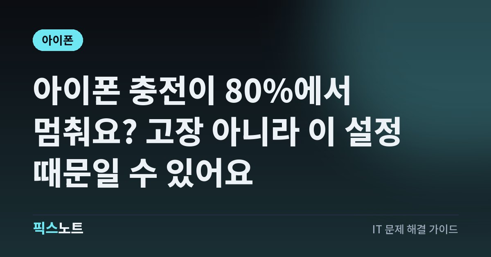

아이폰 충전이 80%에서 멈춰요? 고장 아니라 이 설정 때문일 수 있어요
아이폰 충전이 80%나 특정 %에서 멈출 때 충전 한도, 최적화된 충전, 온도 중 원인을 가르는 법이에요.

밤새 꽂아 뒀는데 아침에 보니 아이폰이 80%에서 멈춰 있으면 충전기나 배터리가 고장 난 줄 알기 쉬워요. 그런데 대부분은 Apple이 배터리를 오래 쓰라고 일부러 넣어 둔 기능이 작동한 거예요. iPhone 15 이후 모델은 충전 한도를 직접 정할 수 있고, 온도가 높을 때도 충전이 멈출 수 있어요. 내 경우가 어떤 건지 1분 만에 가르는 법을 정리했어요.
결론부터: 대부분 배터리를 지키는 기능이에요
아이폰이 80% 근처에서 충전을 멈추는 이유는 크게 세 가지예요.
- 충전 한도: iPhone 15 이후 모델에서 직접 정한 한도까지만 충전돼요.
- 최적화된 배터리 충전: 충전기에 오래 꽂아 둘 것 같으면 80%에서 기다렸다가 쓸 시간에 맞춰 나머지를 채워요.
- 온도: 배터리가 너무 뜨거우면 소프트웨어가 80%까지만 충전되도록 제한할 수 있어요.
Apple은 배터리가 화학적으로 노화되는 데 온도 이력과 충전 패턴이 함께 영향을 준다고 설명해요. 이 기능들은 그 노화를 늦추려고 있는 거예요.
1분 확인: 내 아이폰의 충전 설정 보기
모델에 따라 메뉴 위치가 달라요.
iPhone 15 이후 모델은 이렇게 확인해요.
- 설정 앱을 열고 ‘배터리’를 탭해요.
- ‘충전’을 탭해요.
- 충전 한도가 80%, 85%처럼 100%보다 낮게 설정돼 있는지 봐요.
iPhone 14 이전 모델은 이렇게 확인해요.
- 설정 앱을 열고 ‘배터리’를 탭해요.
- ‘배터리 성능 상태 및 충전’을 탭해요.
- ‘최적화된 배터리 충전’이 켜져 있는지 봐요.
iPhone 15 이후: 충전 한도 바꾸는 법과 작동 방식
iPhone 15 이후 모델은 충전 한도를 80%부터 100%까지 5% 단위로 고를 수 있어요.
- 설정 > 배터리 > 충전으로 들어가요.
- 원하는 한도를 골라요. 끝까지 채우고 싶다면 100%를 골라요.
- 100%를 고르면 최적화된 배터리 충전도 함께 켤 수 있어요.
한도를 정해 두면 아이폰은 그 한도의 몇 퍼센트 이내까지 충전한 뒤 멈춰요. 전원에 꽂힌 채로 5% 이상 떨어지면 다시 충전을 시작해요.
최적화된 배터리 충전: 80%에서 기다리는 이유
최적화된 배터리 충전은 아이폰이 완전히 충전된 상태로 오래 머무는 시간을 줄여서 배터리 수명을 늘리는 기능이에요. 아이폰이 기기 안에서 내 충전 습관을 학습하고, 충전기에 오래 꽂혀 있을 것으로 예상될 때만 작동해요.
작동하면 80%를 넘기기 전에 충전을 잠깐 미뤘다가, 평소 충전기를 뽑는 시간에 맞춰 나머지를 채워요. 이때 잠금 화면에 완전히 충전될 예상 시간이 알림으로 나와요.
지금 당장 100%가 필요할 때: ‘지금 충전’
여행이나 외근처럼 지금 바로 끝까지 채워야 하는 날이 있죠. 설정을 바꾸지 않아도 돼요.
- 충전 중에 잠금 화면에 뜬 충전 알림을 찾아요.
- 알림을 길게 눌러요.
- ‘지금 충전’을 탭해요.
그러면 이번 충전만 기다리지 않고 바로 끝까지 충전돼요.
폰이 뜨거울 때: 80% 제한과 ‘충전 대기 중’
설정은 그대로인데 어느 날만 충전이 멈췄다면 온도를 의심해 보세요. Apple은 충전 중 아이폰이 따뜻해질 수 있고, 배터리가 너무 뜨거우면 소프트웨어가 80%까지만 충전되도록 제한할 수 있다고 안내해요. 배터리 온도가 내려가면 다시 충전돼요.
iOS 16 이후 버전에서는 기기 온도가 너무 높거나 낮으면 충전이 대기 상태로 바뀌고, 잠금 화면이나 설정 > 배터리에 ‘충전 대기 중’ 메시지가 나와요.
- 너무 뜨거우면 직사광선이 없는 시원한 곳으로 옮겨요.
- 너무 차가우면 따뜻한 곳으로 옮겨요.
- 쓰고 있었다면 화면을 잠그거나 잠자기 상태로 둬요.
iOS가 권하는 충전 한도, 따라야 할까?
iPhone 15 이후 모델을 쓰다 보면 iOS가 충전 한도를 먼저 권할 때가 있어요. Apple 안내에 나온 예시는 “사용자의 iPhone 사용 습관을 기반으로, 배터리를 보존하는 데 도움이 되도록 95%의 충전 한도가 권장됩니다.” 같은 메시지예요. 내 충전 습관을 보고 한도를 정하면 배터리 수명에 도움이 된다고 판단했을 때 나와요.
Apple은 모든 충전식 배터리를 소모품이라고 설명해요. 리튬 이온 배터리는 화학적으로 노화되면서 저장할 수 있는 충전량이 줄고, 그만큼 사용 시간과 최대 성능이 떨어져요.
- 하루에 배터리를 다 쓰지 않는 편이라면 권장 한도를 받아들여도 생활에 큰 불편이 없어요.
- 하루 종일 밖에 있어 배터리가 빠듯하다면 100%로 두고 최적화된 배터리 충전을 켜 두는 조합이 현실적이에요.
- 바꾸고 싶을 때는 언제든 설정 > 배터리 > 충전에서 다시 고르면 돼요.
그래도 이상하면: 충전 자체가 안 되는 경우
설정도 온도도 문제가 없는데 아예 충전이 안 되거나 퍼센트가 오르지 않는다면 충전 경로를 점검해요. Apple 안내 순서는 이래요.
- 컴퓨터, 전원 액세서리, 벽면 콘센트 중 다른 전원에 연결해 봐요.
- 아이폰을 재시동해요.
- 케이블과 어댑터에 끊김이나 구부러짐 같은 손상이 있는지 봐요. 손상된 액세서리는 쓰지 마세요.
- 아이폰 아래 충전 포트의 이물질을 제거하고 케이블을 단단히 꽂아요.
- 30분 동안 충전해 봐요.
이렇게 해도 켜지지 않거나 충전되지 않으면 서비스가 필요할 수 있어요. Apple 지원이나 공인 서비스센터에 문의하세요.
자주 묻는 질문
아이폰 충전이 80%에서 멈추는 건 고장인가요?
대부분 고장이 아니에요. iPhone 15 이후 모델의 충전 한도, 최적화된 배터리 충전, 배터리 온도 때문에 일부러 멈추는 경우가 많아요. 설정 > 배터리에서 충전 설정부터 확인하세요.
충전 한도를 80%로 해 두면 배터리가 더 오래가나요?
Apple은 배터리 노화에 충전 패턴과 온도가 함께 영향을 준다고 설명하고, 충전 한도와 최적화 충전을 수명을 늘리는 기능으로 안내해요. 다만 그만큼 하루 사용 시간은 줄어드니 생활 패턴에 맞게 고르세요.
한도를 80%로 했는데 가끔 100%까지 충전돼요.
정상이에요. Apple은 충전 한도를 100%보다 낮게 설정해도 배터리 잔량을 정확하게 추정하려고 가끔 100%까지 충전할 수 있다고 안내해요.
새 아이폰인데 최적화된 충전이 작동을 안 해요.
이 기능은 충전 습관을 배우는 데 최소 14일이 걸리고, 한 장소에서 5시간 이상 충전한 횟수가 적어도 9번 있어야 작동해요. 새 폰이라면 아직 학습 기간일 수 있어요.